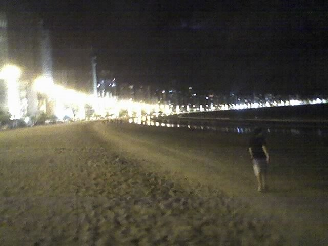

_+

A gestão pública das praias é uma tarefa complexa que envolve múltiplas dimensões,
incluindo econômicas, sociais, ambientais e culturais.
A expansão das faixas de areia com material orgânico do fundo do mar é uma prática que busca equilibrar a preservação ambiental com o desenvolvimento urbano,
permitindo que as praias continuem a ser um recurso natural valioso para as comunidades locais e visitantes.
No entanto, essa abordagem enfrenta desafios significativos, especialmente em relação à sustentabilidade e à saúde mental da população.
A necessidade de repor periodicamente a areia, especialmente após temporadas de chuvas intensas,
levanta questões sobre a viabilidade a longo prazo dessa prática. Além disso, a criação de orlas artificiais pode ter impactos não apenas no ecossistema local,
mas também na conexão das pessoas com a natureza, um fator importante para o bem-estar mental.
A sustentabilidade das praias não é apenas uma questão de manutenção física,
mas também de promover práticas que beneficiem tanto o meio ambiente quanto a saúde mental das comunidades.
Isso inclui a consideração de abordagens ecossistêmicas na gestão de praias,
que reconhecem a importância de dados contínuos sobre os processos ambientais e a interação entre os sistemas sociais e ecológicos.
A saúde mental pública, por sua vez, é influenciada por uma variedade de fatores, incluindo as condições ambientais.
A saúde dos oceanos e a gestão das praias têm uma interface direta com a saúde pública,
onde atividades antrópicas e pressões ambientais podem ter efeitos negativos tanto na biodiversidade marinha quanto na saúde humana.
Portanto, é essencial que as políticas de gestão pública das praias sejam informadas por uma compreensão ampla dos seus impactos,
buscando soluções que sejam sustentáveis tanto para o ambiente quanto para a saúde mental das pessoas. Isso requer um compromisso contínuo com a pesquisa,
a educação e a implementação de práticas sustentáveis que possam criar um equilíbrio entre o desenvolvimento e a preservação dos recursos naturais.
_+

Esta é uma imagem gerada através da inteligência artificial. Para criar esta imagem as palavras utilizadas foram "praia artificial" e "beira do mar".
A máquina imprime a realidade solicitada e transforma uma legítima ideia em arte visual.
O embate semântico e filosófico a respeito do que é sintético e orgânico precisa desvincular primeiro "inteligência" de "artificial" do conceito de "inteligência artificial".
Preferir algo artificial distancia a probabilidade precavida de inteligência.
_+

Antes da transformação da orla de Balneário Camboriú, muitos clamavam por espaço, outros clamavam por lugar ao sol.
A perfeição da natureza foi radicalmente transformada por alegação de "falta de espaço" e a "necessidade" de alguns minutos a mais do sol no fim do dia.
Agora, de fato, espaço é o que não falta. Já o sol, falta.
Alguns minutos extra de sol no fim do dia parece pouco comparado ao tamanho da transformação durante ausência do sol, especialmente em dias de chuva intensa, formando enormes inomináveis fenômenos.
Um grande rastro do mar que toma de volta a praia, o verdadeiro balneário.
_+

Unânime para quem vive aqui ou está só de passagem, Balneário Camboriú é uma cidade promissora, a verdadeira "top of mind" quando o assunto é turismo ou investimento.
Em virtude da expressiva bancada de areia instalada e da repercussão de uma praia artificial, é preciso que seja promissora também nossa integridade física e principalmente a saúde mental.
Para isso, é necessário compreender a realidade imposta sobre as ondas que foram "burieds", expondo os fatos e revertendo outras mazelas em informação fidedigna a respeito da história desta nova praia.
_+

Faça chuva ou faça sol, eventualmente o mar ficará agitado sendo comum maior quantidade de sinalização de perigo em torno da orla.
Nesta fotografia a sequência da sinalização nos faz lembrar que a nova beira do mar é o antigo fundo da praia.
_+

Pode parecer exagero, mas aqui já é possível andar sobre as águas. Um tanto quanto cômico se não fosse trágico ficar ilhado antes mesmo de chegar na ilha.
Ilhada também está a nossa compreensão de praia, quando percebemos que o balneário, por alguns metros durante fortes chuvas, sobre aspecto artificial, faz semelhança com uma ilha.
_+
Após grandes períodos de chuva a natureza toma de volta o que sempre foi dela, emergindo sobre a nova bancada de areia o verdadeiro balneário.
Chuva nada tem a relacionar com destruição, seja onde for, o propósito da chuva sempre será de renovação.
A sustentabilidade faz com que este propósito natural de renovação seja possível, evitando catástrofes ou cenários conturbados por causa da chuva.
Para compreender este processo natural de renovação aqui em nossa praia, precisamos renovar também nosso senso de beleza,
admitindo inundação realidade da nova beleza da cidade.
_+
Nem tudo é perfeito, mas a ilha das cabras é. Lá pode chover sem problemas, pois o ciclo regimental da natureza nada faz prejudicar o seu ambiente.
Entretanto, na nova orla, ou melhor, nova balneário, as ações do homem transformam a perfeição do que era natural em um inesperado degrau,
criando um novo obstáculo para a compreensão da natureza.
_+
Uma coisa é certa, aqui nada será como era antes. Neste espaço faço registro dos vestígios que a própria natureza revela com o passar do tempo.
Tento, ao máximo, driblar as mazelas que a nova bancada de areia sobrepõe.
Entretanto, meu objetivo também é demonstrar que alguns investimentos necessariamente irão por água abaixo.
_+
Um paraíso conturbado, para não dizer destruído, pois a natureza é incapaz de regredir seu próprio ciclo.
Varrer uma poça d'água é algo que nunca poderia imaginar, mas aqui, já se tornou uma realidade um tanto depressiva, literalmente.
Por isso emprego o conceito de socioambiental, através deste, retrato a realidade de maneira fidedigna a partir das ações do homem sobre a natureza.
_+
De fato, ficar tranquilo com crianças na beira do mar é inviável, pois na verdade, a nova beira do mar é então o antigo fundo da praia.
Hoje em dia, após qualquer chuva intensa, grandes poças são formadas por não existir escoamento d'água dentro da nova bancada de areia.
Com toda certeza, água parada sempre terá aspecto agravante diante qualquer compreensão de saúde ou bem-estar.
Infelizmente, crianças são desprovidas desta noção básica de saúde, sendo permitido por seus pais a vivência dos filhos em água parada porque compreendem este fenômeno como uma poça gourmet.
_+
Quanta ironia uma nova faixa de areia proporcionar uma faixa de interditado.
Lembre-se: a natural e antiga beira do mar hoje está aterrada. A nova e artificial beira do mar é o antigo fundo.
Você está mergulhando no fundo da praia.
_+
A situação da balneabilidade desta praia já está crítica. O mar agitado nunca foi um problema sério quando a beira do mar era de fato a beira.
Como era esperado, transformando o antigo fundo da praia em uma artificial beira do mar, a qualidade de banho deixa de ser um bel-prazer tornando-se uma verdadeira preocupação.
_+
Nem sempre os filmes terminam num final feliz. Mesmo com a nossa capacidade otimista para interpretar a realidade, ou aquilo que está por assistir,
a tentativa de maquiar a transgressão, não só sobre o que vemos, mas também o que percebemos, explora nossa sensação de impotência.
_+
Algumas coisas são difíceis de chamar de arte, esta fotografia é uma dessas coisas.
É comum ver crianças brincando com seus carrinhos na areia.
Espantoso, porém, vermos adultos fazendo o mesmo.
Se não é possível surfar no clássico, vamos ter que ver o surfe da beira.
_+
Esta é uma fotografia um mês antes de iniciar as obras. Não sou alto e nem baixo,
mas o suficiente para te provar que tinha muito espaço na praia quando a maré estava baixa.
Também é possível ver que bandeiras vermelhas já eram comuns em determinados períodos do ano, sendo uma incongruência aumentar o perigo na beira do mar.
_+
Duas coisas são bem diferentes, uma é a visão biológica do que é aterrado e se instala, e outra é a questão semântica ou epistemologica da palavra "praia".
Independente do ângulo posicionado neste prisma, faço deste espaço discussão do que um dia foi naturalmente praia (imagem do balneário no ano de 1993).
_+

Começo a debater aqui o tema proposto a respeito da balneabilidade da querida e tão sonhada Balneário Camboriú.
Compartilho nesta imagem um dos primeiros registros da iluminação da orla.
Emergindo a primeira questão: o que é orgânico e o que é sintético? (2010)
_+

Surfista, talvez. Me considero mais um cidadão do que qualquer outra coisa. Na minha infância tive um sonho, estava flutuando sobre as ondas.
Como toda criança, implorei para meus pais por uma prancha de surfe.
Até mesmo uma criança é capaz de perceber as belezas da natureza.
Esta fotografia é um registro de uma manhã de surfe que denominávamos como "clássico". (2009)